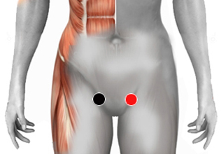

htlv2 virus
Par
nervio inguinal - nervio inguinal

Generalidades:
Los síntomas son muy parecidos a los del htlv1: Problemas genitales, urinarios y de vejiga. Prúrito, comezón, el ano y el recto se resecan. Embarazo tubárico. En algunas personas causa Leucemia. El virus puede dañar al sistema nervioso periférico.
También revisar el virus htlv1
El virus linfotrópico humano de células T tipo 1 (VLTH-2) es un retrovirus que infecta los glóbulos blancos de la sangre. Además puede causar enfermedades del sistema nervioso causando neuropatía periférica, disfunción erectil. También se pueden presentar trastornos bucales como gingivitis y periodontitis. Sólo 1 de cada 20 personas infectadas desarrollará síntomas.
Este virus tiene distribución mundial, se a presentado en mayor porcentaje en poblaciones nativas de Norteamérica.
Transmisión
Se contrae por contacto sexual, por agujas infectadas, de madre a hijo en el momento del parto o en algunos casos en la lactancia. No se ha demostrado el contagio a través de saliva o por vía aerea.